| rubberocket.com |
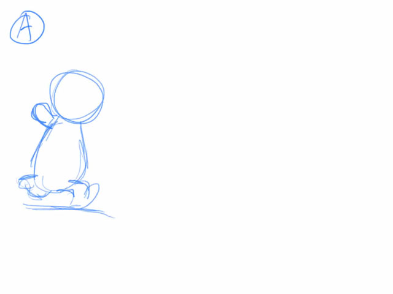 Yet another walk cycle (29 July 2024) -I mean, it's a little stilted here and there, but hey, it's a walk cycle. What are you going to do about it?
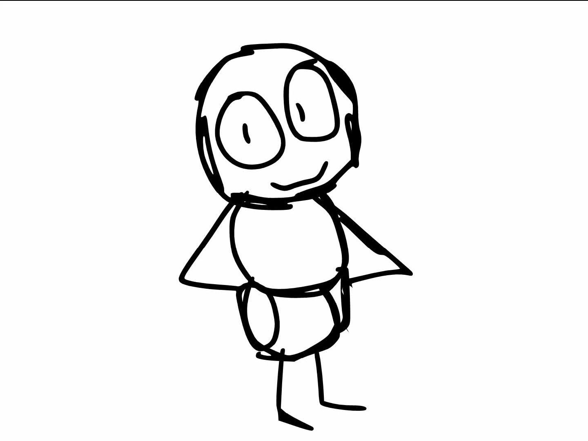 P-Head With A Plan (storyboard) (24 Mar 2024) - I find Greeny Phatom... strange... to this very day.
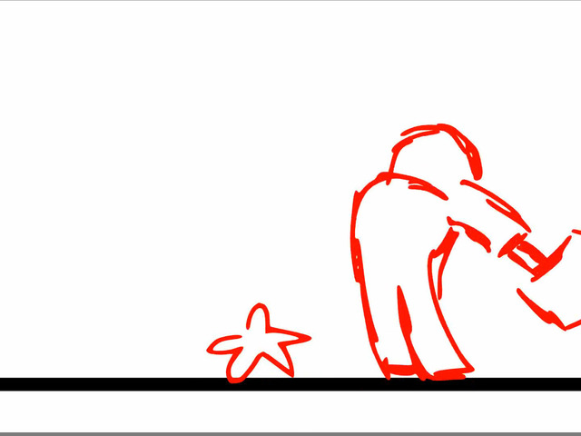 12 Principles Practice (2023) (5 Oct 2023) - Practice. Practice. Practice.
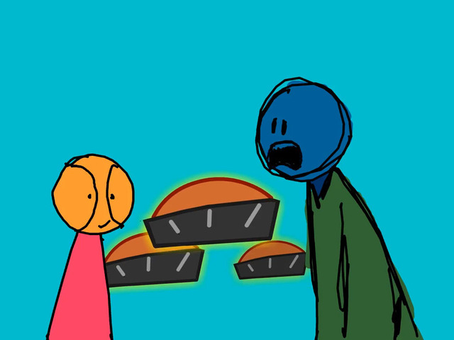 A Bomb Factory (19 May 2023) - One of many examples of me being late to a meme. Also quite unfunny. And lazy. Much like this.
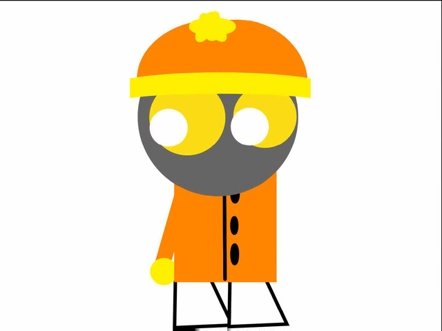 Stan Looks Around (Sometime in Mar 2023) - Duh.
Andre FU^%!@*^ EXPLODES! (Sometime in Feb 2023) - The lamest explosion ever created in animation history. Prove me wrong.
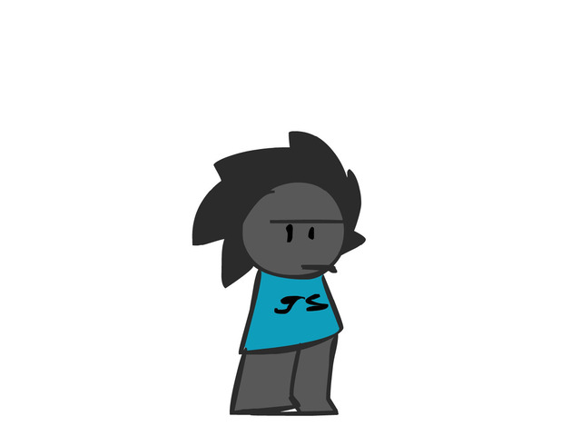 NOSD: Store (23 Oct 2022) - Store? WHAT STORE?!?!
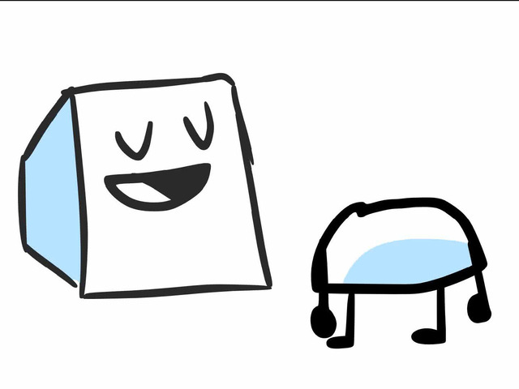 FGPT (Springtime 2022) - The FitnessGram Pacer Test is a multistage aerobic capacity test that progressively gets more difficult as it continues. The 20 meter pacer test will begin in 30 seconds. Line up at the start. The running speed starts slowly but gets faster each minute after you hear this signal bodeboop. A sing lap should be completed every time you hear this sound. ding Remember to run in a straight line and run as long as possible. The second time you fail to complete a lap before the sound, your test is over. The test will begin on the word start. On your mark. Get ready!… Start. ding Million Champs: 2nd Act joke storyboard.
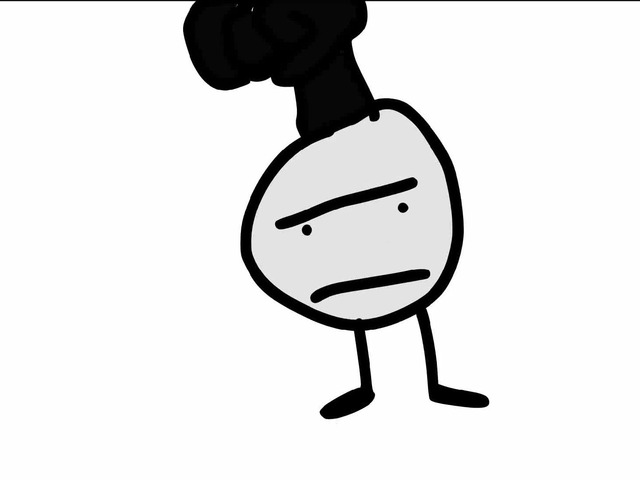 Good-Bad Lips (Wintertime 2022) - Lipsync test. Part of this is, of course, stolen audio, not sure about what exactly it was from but CosmicToons voiced the cheese-headed bean boy
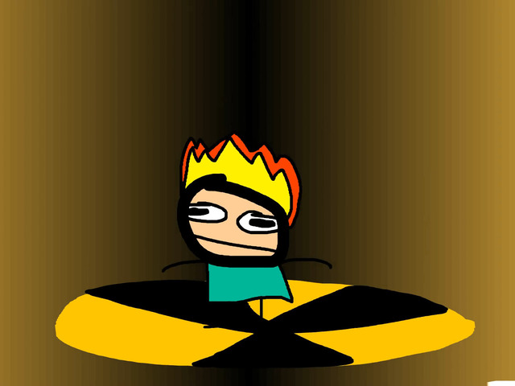 johnnytest (Summertime 2021) - I will never be able to match the quality of lolwut.info.
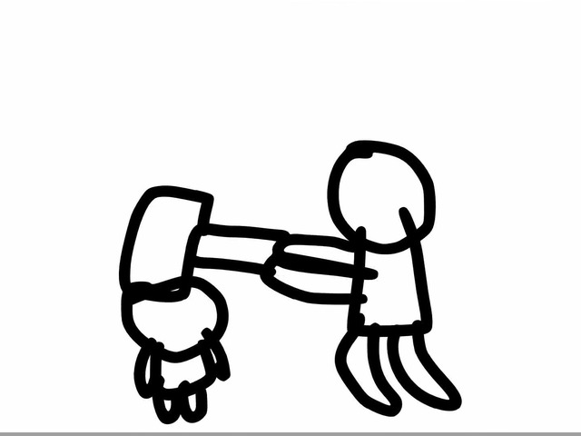 12 Principles Practice (2021) (?? Mar 2021) - Blah blah blah
Sus-shine My Dear Watson (Sometime in August 2021) - Sus without someone among us? Really? When Among Us was still popular?!?! I was SO CLOSE to being relevant but here I am.
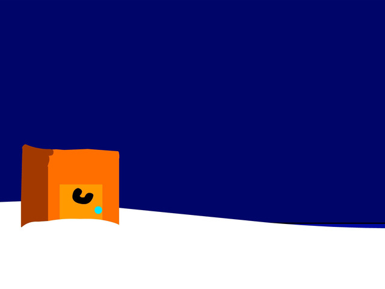 Just An Ordinary Web Series: Mayors (Springtime 2021) - we come from the mayors
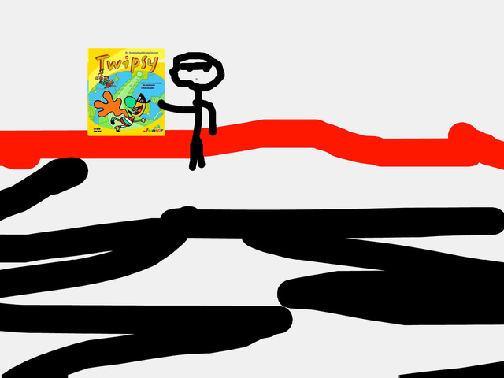 Twipsy PC In a Nutshell (Summertime 2020) - I never even bothered watching gameplay, but by the looks of it, it's yet another Macromedia Director-based game. Based on an obscure cartoon. I'd say it reminds me of one that was made by Disney, but its game wasn't even made in Macromedia. Whatever.